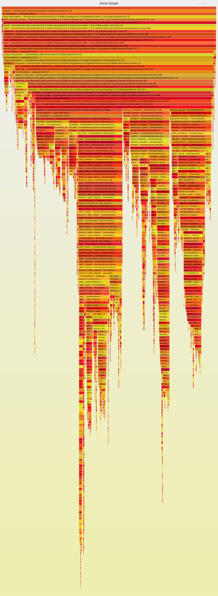

rbspy
Have you ever wanted to know what functions your Ruby program is calling? rbspy can tell you!
rbspy lets you profile Ruby processes that are already running. You give it a PID, and it starts
profiling! It's a sampling profiler, which means it's low overhead and safe to run in
production.
Quick start
If you're on macOS, install rbspy with Homebrew:
brew install rbspy
If you have a working Rust toolchain (1.56 or newer), you can install with cargo:
cargo install rbspy
Otherwise, check out the installing section to get rbspy running on your computer.
Profiling a Ruby program
If your program is already running, get its PID and profile it like this:
rbspy record --pid $PID
You can also use rbspy to profile a Ruby script, like this. It works both with and without bundle exec.
rbspy record -- bundle exec ruby my-script.rb
Here's what running rbspy record on a Rubocop process looks like. You'll see a live summary of
what the top functions being run are, and it also saves the raw data + a flamegraph for more in
depth analysis.

Installing rbspy
Installing rbspy is straightforward on most common operating systems. It can be run on your computer, in CI, or on production servers.
System requirements
rbspy runs on Linux*, Windows, FreeBSD, and macOS.
- Linux kernel version 3.2+ required. For Ubuntu, this means Ubuntu 12.04 or newer.
Ruby requirements
rbspy can profile programs that use Ruby 1.9.3 and newer. The maintainers try to add support for new Ruby versions shortly after they're released.
Installing rbspy on your computer
Installing rbspy is easy on most platforms, as it's a single binary.
Option 1: Install from a package
Installing from a package is the simplest method. If your preferred operating system or distribution isn't listed here, please consider making a package for it. We are grateful for packaging contributions.
Alpine Linux
apk add rbspy
macOS (Homebrew)
brew install rbspy
Option 2: Download a binary
If there's no package for your operating system, downloading a pre-compiled binary is the next simplest method. There are binaries for Linux, macOS, FreeBSD, and Windows, which are the supported platforms.
- Download the latest release for your operating system from the releases page
- Note: There are two types of Linux releases. Those tagged with
gnuare dynamically linked against GNU libc, which needs to be installed on the system where rbspy runs. Those tagged withmuslare statically linked against musl libc and can be used without a specific libc being installed.
- Note: There are two types of Linux releases. Those tagged with
- Unpack the release. On Unix systems (Linux, Mac, FreeBSD), move the rbspy binary to
/usr/local/bin/rbspy. You will need to make it executable with, for example,chmod +x rbspy. - Run the binary to start profiling! See Using rbspy to get started.
Option 3: Build rbspy from source
Finally, you can build rbspy from source if you have a Rust toolchain installed. You will need Rust 1.56 or newer.
-
Install Cargo (if you haven't already). There may be a package available for your operating system. There's a guide in the cargo docs, or you can run this command if you're on Linux, macOS, or FreeBSD:
curl --proto '=https' --tlsv1.2 -sSf https://sh.rustup.rs | shFor other systems, please check the instructions at https://rustup.rs/.
-
Add
~/.cargo/binto yourPATH:. "$HOME/.cargo/env" -
Build rbspy!
git clone https://github.com/rbspy/rbspy cd rbspy cargo build --release ./target/release/rbspy --helpAlternatively, you can build and install from crates.io:
cargo install rbspy
Install rbspy in a CI pipeline or other unattended environment
If you're using Docker, we publish images on Docker Hub.
You can also download release binaries from the releases page.
In both cases, the releases marked with gnu contain an rbspy binary that's dynamically linked against GNU libc, which needs to be installed in your container image. Those marked with musl contain an rbspy binary that's statically linked against musl libc and can be used standalone on most Linux systems.
Using rbspy
Subcommands
rbspy has 3 subcommands: snapshot, record, and report.
Snapshot
Snapshot takes a single stack trace from the specified process, prints it, and exits. This is useful if you have a stuck Ruby program and just want to know what it's doing right now. Must be run as root.
sudo rbspy snapshot --pid $PID
Record
Record records stack traces from your process and saves them to disk.
rbspy record will save 2 files: a gzipped raw data file, and a visualization (by default a flamegraph, you
can configure the visualization format with --format). The raw data file contains every stack
trace that rbspy recorded, so that you can generate other visualizations later if you want. By
default, rbspy saves both files to ~/.cache/rbspy/records, but you can customize where those are
stored with --file and --raw-file.
This is useful when you want to know what functions your program is spending most of its time in.
You can record stack traces in two different ways, by PID or by executing a new ruby process.
Record by PID
# Must be run as root
sudo rbspy record --pid $PID
Record by executing the process through rbspy
# Must be run as root on Mac (but not Linux)
rbspy record ruby myprogram.rb
# Put `--` after record if your program has command line arguments
rbspy record -- ruby myprogram.rb --log-level 0
The reason this has to be run as root on Mac but not on Linux is that Mac and Linux systems APIs are
different. rbspy can use the process_vm_readv system call to read memory from a child process on
Linux without being root, but can't do the same with vm_read on Mac.
If run with sudo, rbspy record by default drops root privileges when executing a subprocess. So if
you're user bork and run sudo rbspy record ruby script.rb. You can disable this with
--no-drop-root.
Optional Arguments
These work regardless of how you started the recording.
--rate: Specifies the number of stack traces that are sampled per second. The default rate is 100hz.--duration: Specifies how long to run before stopping rbspy. This conficts with running a subcommand (rbspy record ruby myprogram.rb).--format: Specifies what format to use to report profiling data. The options are:flamegraph: generates a flamegraph SVG that you can view in a browserspeedscope: generates a file to drop into https://www.speedscope.app/ to interactively explore flamegraphscallgrind: generates a callgrind-formatted file that you can view with a tool likekcachegrind.summary: aggregates % self and % total times by function. Useful to get a basic overviewsummary_by_line: aggregates % self and % total times by line number. Especially useful when there's 1 line in your program which is taking up all the time.
--file: Specifies where rbspy will save formatted output.--raw-file: Specifies where rbspy will save formatted data. Use a gz extension because it will be gzipped.--flame-min-width: Specifies the minimum flame width in flamegraphs as a percentage. Useful for excluding functions that appear in a small number of samples.--nonblocking: Don't pause the ruby process when collecting stack samples. Setting this option will reduce the performance impact of sampling but may produce inaccurate results.--subprocesses: Record all subprocesses of the given PID or command.--silent: Don't print the summary profiling data every second.
Report
If you have a raw rbspy data file that you've previously recorded, you can use rbspy report to
generate different kinds of visualizations from it (the flamegraph/callgrind/summary formats, as
documented above). This is useful because you can record raw data from a program and then decide how
you want to visualize it afterwards.
For example, here's what recording a simple program and then generating a summary report looks like:
$ sudo rbspy record --raw-file raw.gz ruby ci/ruby-programs/short_program.rb
$ rbspy report -f summary -i raw.gz -o summary.txt
$ cat summary.txt
% self % total name
100.00 100.00 sleep [c function] - (unknown)
0.00 100.00 ccc - ci/ruby-programs/short_program.rb
0.00 100.00 bbb - ci/ruby-programs/short_program.rb
0.00 100.00 aaa - ci/ruby-programs/short_program.rb
0.00 100.00 <main> - ci/ruby-programs/short_program.rb
Containers
If you want to profile a ruby program that's running in a container on Linux, be sure to add the
SYS_PTRACE capability. For Docker containers, this can be done by adding a flag to the command
when you launch the container:
docker run --cap-add=SYS_PTRACE ...
If you're using Kubernetes, you can add the ptrace capability to a deployment like this:
securityContext:
capabilities:
add:
- SYS_PTRACE
If this doesn't work for you, see issue 325 for
troubleshooting steps. You may need additional securityContext configuration if the processes
in your container are running as an unprivileged (non-root) user, which is recommended for security
reasons.
rbspy vs StackProf
rbspy and StackProf are both sampling profilers for Ruby. They both let you generate flamegraphs. So when should you use rbspy, and when should you use stackprof?
The two tools are actually used in pretty different ways! rbspy is a command line tool (rbspy record --pid YOUR_PID),
and StackProf is a library that you can include in your Ruby program and use to profile a given
section of code.
When to use rbspy
rbspy profiles everything a given Ruby process is doing -- you give it a PID of a Ruby process, and it profiles it. It's useful when:
- You don't want to edit your code to start profiling
- You have a Ruby program that you didn't write that you want to quickly get profiling information about (eg Chef / Puppet)
- You want to quickly profile a Ruby script (how to do it:
rbspy record ruby my-script.rb)
One common use case for rbspy is profiling slow unit test runs -- instead of spending a bunch of
time adding instrumentation, you can run rbspy record ruby my-test.rb and instantly get profiling
information about what's going on.
When to use StackProf
StackProf requires more work to set up, and gives you more control over which code gets profiled. It's best when you want to profile a specific section of your code, or only want to profile certain HTTP requests.
Here's what editing your code to use StackProf looks like
StackProf.run(mode: :cpu, out: 'tmp/stackprof-cpu-myapp.dump', raw: true) do
# code you want to profile here
end
Here are the steps to using StackProf:
- Add the
stackprofgem to your Gemfile - Edit your code to call StackProf and save data to the right file
- Use
stackprofto summarize the reported data from the
A more batteries-included way of doing profiling if you have a Rails/Rack program is to use rack-mini-profiler. It uses StackProf under the hood to do CPU profiling as well as supporting memory profiling. Here's a blog post about rack-mini-profiler.
About this profiling guide
rbspy's goal is not just to be a Ruby profiler, but to make profiling a little bit more accessible to the Ruby community in general and something that more programmers do.
We've heard from a lot of people over the years that they find profiling confusing and that they don't know where to start. So, this profiling guide aims to explain some of the basics of profiling (what's benchmarking? what's a flamegraph?). Nothing in the profiling guide is Ruby- or rbspy-specific — it all applies to profiling in general.
Questions to ask when optimizing code
When people start looking at profiling data, they're often unsure of where to start.
If you have a slow program that you want to start optimizing, here are a few questions to consider using your profiling tools to answer.
Is my program mostly using the CPU or mostly waiting?
If your program is slow, the first most important thing to find out is whether it's slow because it's using the CPU or if it's slow because it's waiting for the disk or network or something.
If your program is spending 98% of its time waiting for the result of a database query, it's very possible that you don't need to change your program's code at all, and what you need to do is work on your database's indexes!
Is my program swapping memory to disk?
This isn't a question that profilers can answer, but if your program is using a lot of memory (more than is available on your machine), it's worth checking whether the program is swapping memory to disk. Swapping will make your program run a lot slower, especially if your swap partition is encrypted.
Is there a single function where all the time is being spent?
Sometimes when a program is really unexpectedly slow, there's one function which is overwhelmingly the culprit. Profilers can tell you what % of your program's execution time was spent in each function.
When thinking about this question it's useful to understand the difference between "self time" and "total time" spent in a function -- a lot of profilers (including rbspy) will give you a report like this:
% self % total name
3.05 10.09 each_child_node
2.52 31.14 block (2 levels) in on_send
2.17 14.31 do_parse
1.76 3.28 cop_config
1.70 2.29 block (2 levels) in <class:Node>
1.41 1.41 end_pos
The self time is the percentage of time that function was at the top of the call stack. Basically -- if the function is doing computations itself (vs calling other functions), it's what % of time was spent in those functions.
Looking for functions with high self time can be a good way to find low-hanging fruit for optimizations -- if 20% of the time is being spent in a single function's calculations and you can make that function 90% faster, then you've improved your program's overall speed a lot! For example, if you have a slow calculation, maybe you can cache it!
The total time is the percentage of time that function appeared in a call stack. Basically it's the % of time spent in the function itself + every other function it called.
Both self time and total time are important to consider -- for example, if I have a function that does this:
def parent_fun
for x in list1
for y in list2
child_fun(x,y)
end
end
end
your profiler might report that parent_fun has 0% "self time" (because all it does is call
child_fun over and over again), but maybe it's still possible to optimize the algorithm it uses.
How many times is function X being called?
If your profiler says that 98% of the time is being spent inside a single function
like calculate_thing, you're not done! There are 2 possible cases here:
calculate_thingis taking a long timecalculate_thingis fast, but another function is calling that function way too many times. No use having a fast function if it's being called 100 million times!
Because rbspy is a sampling profiler (not a tracing profiler), it actually can't tell you how times
a function was called -- it just reports "hey, I observed your program 100,000 times, and 98,000 of
those times it was in the calculate_thing function".
ruby-prof is a tracing profiler for Ruby, which can tell you exactly how many times each function was called at the cost of being higher overhead.
Benchmarking your code
People who are just getting started making their code faster sometimes confuse benchmarking and profiling. Let's explain the difference and how to use both techniques to make your code faster!
In short: a benchmark tells you how slow your code is ("it took 20 seconds to do X Y Z") and a profiler tells you why it's slow ("35% of that time was spent doing compression").
What's benchmarking? Why is it important?
Optimizing code is often very counterintuitive -- often I'll have a great idea for how to make my code faster, and it'll turn out to make almost no difference at all in practice. So when optimizing, it's extremely important to have objective standards you can measure your changes against!
A benchmark is a test that you run to measure how fast your code is. For example, if I have a compression library, I might test how long it takes to compress a given 100MB file. Or if I was working on Jekyll's performance (a static site generator), I might take a specific large site and benchmark how long Jekyll takes to render that site.
If you can run the benchmark on your dev machine, you can make changes, see "oh, that didn't make any difference!", and then quickly try out a different approach.
Run your benchmarks more than once
Suppose you run your benchmark and it takes 6 seconds. You make some optimizations and run it again, and afterwards it takes 5.7 seconds. That's a 5% performance improvement, right? Not huge, but not nothing?
Not necessarily!
Here's a real benchmark from my computer (generating a Jekyll site), and how long it took (in seconds) across 10 different runs:
5.94
6.00
6.04
5.98
6.15
6.37
6.14
6.20
5.98
6.18
6.22
6.04
6.16
When I ran it 100 times, there was even more variation -- sometimes it would take up to 9 seconds (for instance if I was using a lot of CPU).
So the same benchmark, on the same computer, can take anywhere between 6 to 9 seconds. This means that if, for this benchmark, I see a performance improvement of less than 0.5 seconds (~10%) or so, it's worth being suspicious.
We don't have time here to do a rigorous discussion of statistics and benchmarking, but here are a few guidelines:
- be suspicious of small performance improvements (like 5% or 10%). The smaller the performance improvement you're trying to verify, the more times you need to run your benchmark to be sure that it's real.
- running any benchmark 10 times instead of just once is a good way to get an idea of how much natural variation that benchmark has.
If you're interested in taking a more statistically rigorous approach, a good starting point is to look up "bootstrap confidence intervals", which is an easy computational way (very little math!) to get confidence intervals.
Using benchmarking + profiling to make your code faster
There are basically 2 typical workflows you can use when optimizing your code. Basically: you can either profile a benchmark of your code, or you can profile your code running in production.
Both of these techniques are basically the same: measure your code's speed somehow, profile it, come up with potentially faster code, and then measure again afterwards to see if it actually worked!
The most important tip here is: don't use profiler results to figure out if your optimization worked, use benchmark results. Using benchmark results will help you make sure that your optimization actually makes a significant improvement to the program's performance as a whole.
Technique 1: Benchmark locally
- Realize something is slow ("oh no, this computation is taking SO LONG, why??")
- Create a benchmark that you can run locally that demonstrates the slow behavior. This doesn't need to be complicated!
- Run your benchmark (10 times!) to get a baseline for how long it takes
- Profile the benchmark.
- Implement a fix
- Run your benchmark again to see if your fix worked!
Technique 2: Monitor production performance
This technique has a little less of the scientific rigor that you get when you make a benchmark, but often making a benchmark isn't practical! A lot of things happen in production that are hard to reproduce, but you need to figure out why they're happening anyway.
- Realize something is slow (your users are complaining about performance!)
- Find a way to monitor the slow thing in production with your favorite monitoring tool (graphite, datadog, new relic, whatever)
- Profile the code running in production
- Implement a fix and deploy it to a test environment or to production
- Use your monitoring to see if the performance improved!
Using flamegraphs
What's a flamegraph?
Here's a very basic introduction to flamegraphs. Everything in here is true for flamegraphs in general, not just the flamegraphs rbspy generates.
Flamegraphs are a way to visualize how your program is spending its time. A few important things about flamegraphs:
- The x axis on the flamegraph doesn't represent time.
- The SVGs have Javascript in them and they're interactive! You can search with ctrl+f!
- You can't tell from a flamegraph how many times a function was called. You can only tell how much time was spent in the function.
Reading a flamegraph
Flamegraphs are generated from a series of stack traces. To get an idea for how this works, let's pretend that our profiler has collected 4 stack traces, as follows.
a;d 1
b;d 1
a;b;c 1
a;b;c;d 1
Here's the flamegraph. It's generated by sorting the above stack traces (so that all the as are
together) and arranging them vertically into a chart. In this one, the main method is at the top.

What this tells us is:
- 75% (3/4) of the stack traces we collected started in the
afunction - 50% (2/4) of the stack traces started with
acallingband then callingc.
A simple real example
To get a tiny bit more complicated -- here's a very simple Ruby program that spends 20% of its time
running the panda function, and 80% of its time running the cucumber function.
def panda
sleep(0.20)
end
def potato
cucumber
end
def cucumber
sleep(0.80)
end
loop do
panda
potato
end
Here's the flamegraph! There's a panda bar in the flame graph that takes up 20% of the x axis, and
potato and cucumber bars that take up 80% of the x axis. This means that 80% of the time was
spent in potato/cucumber and 20% in panda.
{kind=link}
If you click on the above flamegraph, you'll get an interactive SVG -- you can hover over any part
of the flamegraph to get the % of samples that were in that function. In this example, 79.37% of the
samples were in the potato function.
A more complicated flamegraph: Jekyll
Here's a much more complicated flamegraph generated by rbspy. The way I usually read flamegraphs
is to look for big wide sections (because they represent a large part of the program's execution)
There are 2 things that jump out to me about this flamegraph:
- there's an
initializefunction where 5.9% of the time is spent. Not that much time is being spent in initialization! - 86.6% of the time is spent in
process_site, and if you look a little further down, you can see thatrender_documentsplits into 3 separate functions:convert,place_in_layouts, andrender_liquid. That means thatrender_documentcalled those 3 methods, and that, whilerender_documentdid call other methods, it didn't spend a substantial amount of time in any other method.
This is neat! I'm not familiar with the Jekyll codebase at all, but just by looking through this flamegraph I can understand a few important things about how the code is structured.
Here's the slice that jumps out at me (where render_document splits into the 3 methods it calls).
Basically the thing to look for here is where the big slice (which takes up ~80% of the program)
breaks into smaller slices, because that tells you what the program's main phases are.

and the whole flamegraph:
{kind=link}
When don't flamegraphs work well? (recursion!)
Flamegraphs don't work well with highly recursive programs. When you have a program with a lot of
recursion, what will happen is that the function you're calling recursively will appear over and
over again multiple times in each stack trace. If you have a very recursive program that you want to
analyze in depth, using a callgrind visualization instead might work better.
For example, Rubocop uses a lot of recursion. In this flamegraph from a Rubocop execution, we see
that the on_block, on_begin, on_while, etc functions get called over and over and over again
in a lot of different places, and it's very hard to learn anything from the flamegraph except that
there's a lot of recursion.

A simple text summary gives us more insight into what's going on (7.6% of the time is spent in
advance!) than the flamegraph does.
Summary of profiling data so far:
% self % total name
7.65 8.99 advance - /home/bork/.rbenv/versions/2.4.0/lib/ruby/gems/2.4.0/gems/parser-2.4.0.2/lib/parser/lexer.rb
4.83 11.31 each_child_node - /home/bork/.rbenv/versions/2.4.0/lib/ruby/gems/2.4.0/gems/rubocop-0.52.1/lib/rubocop/ast/node.rb
3.66 8.65 block in tokens - /home/bork/.rbenv/versions/2.4.0/lib/ruby/gems/2.4.0/gems/rubocop-0.52.1/lib/rubocop/cop/mixin/surrounding_s
3.33 3.33 source_range - /home/bork/.rbenv/versions/2.4.0/lib/ruby/gems/2.4.0/gems/rubocop-0.52.1/lib/rubocop/ast/node.rb
2.50 29.28 block (2 levels) in on_send - /home/bork/.rbenv/versions/2.4.0/lib/ruby/gems/2.4.0/gems/rubocop-0.52.1/lib/rubocop/cop/commiss
2.50 2.50 block in offensive? - /home/bork/.rbenv/versions/2.4.0/lib/ruby/gems/2.4.0/gems/rubocop-0.52.1/lib/rubocop/cop/style/commented
2.50 2.50 block (2 levels) in find_common_characters - /home/bork/.rbenv/versions/2.4.0/lib/ruby/gems/2.4.0/gems/rubocop-0.52.1/lib/rubo
2.16 9.65 block in each_child_node - /home/bork/.rbenv/versions/2.4.0/lib/ruby/gems/2.4.0/gems/rubocop-0.52.1/lib/rubocop/ast/node.rb
1.83 15.31 do_parse - /home/bork/.rbenv/versions/2.4.0/lib/ruby/2.4.0/racc/parser.rb
1.83 1.83 to_s - /home/bork/.rbenv/versions/2.4.0/lib/ruby/gems/2.4.0/gems/rubocop-0.52.1/lib/rubocop/cop/badge.rb
1.83 1.83 rspec_pattern - /home/bork/.rbenv/versions/2.4.0/lib/ruby/gems/2.4.0/gems/rubocop-rspec-1.22.0/lib/rubocop/cop/rspec/cop.rb
1.66 2.66 cop_config - /home/bork/.rbenv/versions/2.4.0/lib/ruby/gems/2.4.0/gems/rubocop-0.52.1/lib/rubocop/cop/cop.rb
1.50 1.50 end_pos - /home/bork/.rbenv/versions/2.4.0/lib/ruby/gems/2.4.0/gems/rubocop-0.52.1/lib/rubocop/token.rb
1.33 1.50 style_detected - /home/bork/.rbenv/versions/2.4.0/lib/ruby/gems/2.4.0/gems/rubocop-0.52.1/lib/rubocop/cop/mixin/configurable_e
1.16 2.00 to_a - /home/bork/.rbenv/versions/2.4.0/lib/ruby/gems/2.4.0/gems/ast-2.3.0/lib/ast/node.rb
1.16 1.16 initialize - /home/bork/.rbenv/versions/2.4.0/lib/ruby/gems/2.4.0/gems/rubocop-0.52.1/lib/rubocop/cop/cop.rb
1.16 1.16 block (2 levels) in of - /home/bork/.rbenv/versions/2.4.0/lib/ruby/gems/2.4.0/gems/unicode-display_width-1.3.0/lib/unicode/dis
1.00 9.48 tokens - /home/bork/.rbenv/versions/2.4.0/lib/ruby/gems/2.4.0/gems/rubocop-0.52.1/lib/rubocop/cop/mixin/surrounding_space.rb
1.00 2.50 block (2 levels) in <class:Node> - /home/bork/.rbenv/versions/2.4.0/lib/ruby/gems/2.4.0/gems/rubocop-0.52.1/lib/rubocop/ast/no
1.00 2.16 block in on_module - /home/bork/.rbenv/versions/2.4.0/lib/ruby/gems/2.4.0/gems/rubocop-0.52.1/lib/rubocop/cop/commissioner.rb
Getting help
The rbspy community, like the greater Ruby and Rust communities, is a helpful and welcoming place. If you need help using rbspy, here are a few options:
- The mailing list! Email rbspy-users@googlegroups.com
- Gitter chat room: http://gitter.im/rbspy/rbspy
- If you think you've found a bug, create an issue on GitHub. You may want to search open issues first, since someone else may have encountered the same bug.
Contributing
A major goal for this project is to get more maintainers and contributors. Pull requests that improve usability, fix bugs, or help rbspy support more operating systems are very welcome. If you have questions about contributing, come chat on gitter.
The source code for rbspy is on GitHub.
If you're not a very experienced Rust programmer, you're very welcome to contribute. A major reason rbspy is written in Rust is that Rust is more approachable than C/C++. https://www.rust-lang.org/ has great resources for learning Rust.
Frequently asked questions
Who makes rbspy?
Julia Evans started the project and led its development until 2021. Adam Jensen is the primary maintainer. For a full list of contributors, see the CONTRIBUTORS file.
Who funds rbspy?
Initial rbspy development was funded by the Segment Open Fellowship -- they paid for 3 months of development on the project, to take it from a sketchy prototype to an actual working profiler that people use to make their Ruby programs faster. Julia took a 3 month sabbatical off work to build it.
This kind of short-term funding is an awesome way to bootstrap new open source projects that might not happen otherwise! You can do a lot in 3 months :)
Can I use rbspy in production?
Yes! rbspy only reads memory from the Ruby process you're monitoring, it doesn't make any changes. Unlike some other statistical profilers, rbspy does not use signals or ptrace, so it won't interrupt system calls your Ruby program is making.
The things to be aware of are:
- By default,
rbspy0.6 and newer pauses the ruby process when it's collecting samples. This can affect performance, especially if you're using a high sampling rate. You can disable the pausing with the--nonblocking, but be aware that this can lead to incorrect samples. flag. rbspydoes use some CPU. If you userbspy record --subprocesses, it can use a substantial amount of CPU (because it'll start a separate thread for every process it's recording)- disk usage:
rbspy recordwill save a data file to disk with compressed stack traces, and if you run it for many hours it's possible you'll use a lot of disk space. We recommend giving rbspy a time limit, likerbspy record --duration 10.
Any bugs in rbspy will manifest as rbspy crashing, not your Ruby program crashing.
How does rbspy read data from my Ruby processes?
On Linux, it uses the process_vm_readv system call, which lets you read memory from any other
running process.
How does rbspy handle threads?
rbspy always collects the stack from what the Ruby VM reports as the currently running thread.
This is because the global VM lock (GVL) only allows one thread to be running Ruby code at any given time. It ignores
threads that are not currently running.
When rbspy is profiling ruby 3 programs, it currently only samples the main ractor.
Can rbspy profile C extensions?
Yes. Any calls into C will be reported in the format "sleep [c function] - (unknown)".
I love rbspy! How can I thank you?
It really helps if you add a comment to our list of testimonials on GitHub saying how rbspy helped you!
Is there a similar project for Python?
Yes! py-spy by Ben Frederickson and pyflame by Evan Klitzke do basically the same thing as rbspy, but for Python programs.
Who made the logo?
Ashley McNamara was extremely kind and designed it!! She's an awesome software engineer who also makes delightful stickers. See her gophers repository for a bunch of awesome gopher art she's done for the Go community.